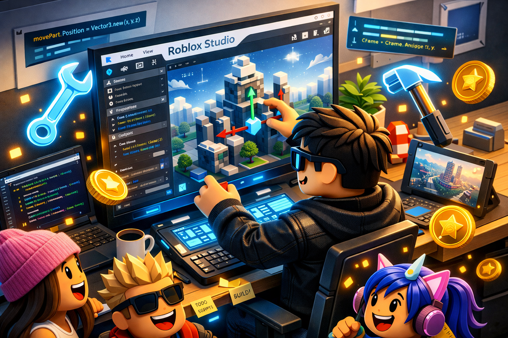

Cómo mejorar el rendimiento y los FPS en Roblox: guía completa para PC y móvil 2026

El lag en Roblox arruina experiencias que de otra forma serían perfectas. Ya sea que juegues en un PC de gama media, en un portátil de varios años o en un teléfono con recursos limitados, existe un conjunto de ajustes —muchos ignorados por la mayoría de jugadores— que pueden transformar una sesión entrecortada en una experiencia fluida. Esta guía cubre todo, desde los cambios más básicos hasta optimizaciones avanzadas.
Por qué Roblox puede funcionar mal incluso en equipos razonables
Roblox no es un juego con requisitos técnicos extremos, pero su arquitectura es inusual: cada experiencia dentro de la plataforma es técnicamente un juego diferente, con distintos niveles de optimización según el creador. Esto significa que un juego puede funcionar perfectamente mientras que otro, en el mismo dispositivo, provoca caídas de rendimiento severas.
Además, la configuración predeterminada de Roblox no siempre es la óptima para tu hardware específico. El motor gráfico puede intentar renderizar más detalles de los que tu dispositivo puede manejar fluidamente. La buena noticia es que la mayoría de estos problemas tienen solución con unos pocos cambios.
Ajustes de gráficos: el impacto más inmediato
La primera acción que debes tomar es controlar manualmente la configuración de gráficos. Por defecto, Roblox usa el modo "Automático", que frecuentemente sobreestima las capacidades del equipo.
- Entra a cualquier juego de Roblox.
- Presiona Escape para abrir el menú.
- Selecciona el ícono de Configuración (engranaje).
- Ve a la pestaña Gráficos.
- Desactiva "Modo gráfico automático" y mueve el deslizador manualmente.
Ajustes que más impactan en el rendimiento
Iluminación y sombras: Las sombras dinámicas son el ajuste que más recursos consume. Reducirlas puede dar un salto de 20–40% en FPS sin cambiar drásticamente el aspecto visual del juego.
Calidad de texturas: En dispositivos con poca VRAM, reducir la calidad de texturas alivia significativamente la carga. El resultado es menos nítido pero la ganancia en fluidez puede ser considerable.
Distancia de renderizado: Controla cuán lejos ve tu personaje. En juegos de mundos abiertos grandes, reducir esta distancia es una de las optimizaciones más efectivas disponibles.
Efectos de post-procesado: Bloom, desenfoque de movimiento y aberración cromática son efectos visuales que consumen recursos sin aportar información de juego. Desactivarlos es siempre una buena idea en equipos con dificultades.
Los cambios en los ajustes gráficos tienen efecto inmediato en la tasa de fotogramas.
Optimización de red: cuando el problema no son los gráficos
Si experimentas "teleporting" de personajes, acciones que no registran o desconexiones frecuentes, el problema está en tu conexión de red. Roblox necesita una conexión estable más que rápida: la latencia (ping) importa más que el ancho de banda.
- Usa WiFi de 5 GHz en lugar de 2.4 GHz si tu router lo soporta. Es menos congestionada y da latencias más consistentes.
- Prefiere cable Ethernet sobre WiFi siempre que sea posible. La diferencia en estabilidad es notable en sesiones largas.
- Reinicia tu router periódicamente. Los routers domésticos pueden degradar el rendimiento después de días de uso continuo.
- Cierra aplicaciones que usen red durante el juego: descargas activas, streaming en otros dispositivos, actualizaciones automáticas.
- Selecciona servidores regionales en juegos que lo permitan. Conectarse a un servidor cercano reduce el ping significativamente.
Liberar memoria RAM: el paso más ignorado
Roblox puede necesitar hasta 2 GB de RAM en experiencias complejas. Si tu sistema tiene 4 GB o menos, esto puede convertirse en un cuello de botella severo. Antes de abrir Roblox, cierra el navegador web, aplicaciones de mensajería y cualquier programa que no necesites activamente.